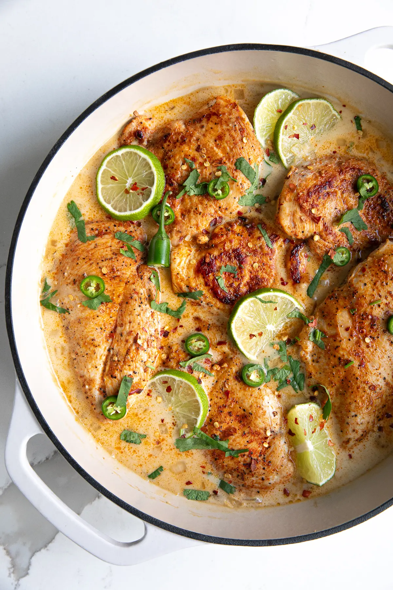

Creamy Coconut Chicken

Description
This creamy coconut milk chicken recipe is made with fresh lime juice, creamy coconut cream, and tender, juicy chicken breasts. Easy and delicious, have this one-pan, dairy-free, and low-carb chicken dinner on the table in just about 30 minutes!
Ingredients
- 2 large boneless skinless chicken breasts
- 1 teaspoon salt
- 1 teaspoon paprika
- 0.5 teaspoon garlic powder
- 0.5 teaspoon onion powder
- 1 tablespoon coconut oil or olive oil
- 1 medium onion - diced
- 5 cloves garlic - minced
- 2 teaspoon fresh ginger - grated
- 1 serrano chili pepper - or jalapeño, diced (optional)
- 1.5 cups low-sodium chicken broth
- 0.25 cup fresh lime juice - plus more to taste
- 1 tablespoon brown sugar
- 2 teaspoon soy sauce
- 1 (15 ounce) can coconut milk
- 2 tablespoon fresh cilantro - to garnish
- 1 teaspoon red pepper flakes - to garnish
Steps
- Slice each chicken breast in half lengthwise to make four thinner chicken breast cutlets. Season both sides with salt, paprika, garlic powder, and onion powder.
- Melt the coconut oil in a large skillet set over medium-high heat. Once the pan is hot, add the chicken and sear for approximately 3-5 minutes on each side, or until golden and nearly cooked through. Remove chicken and transfer to a clean plate and set aside.
- In the same skillet over medium heat, add one more tablespoon of coconut oil. Add the onions and sauté for 4-5 minutes, stirring frequently. Once the onions have softened, add the garlic, ginger, and diced chili pepper (if using). Mix well and continue to cook for one minute more, stirring continuously.
- Add the chicken stock and bring to a boil. Once boiling, reduce heat to medium-low. Stir in the fresh lime juice, brown sugar, and soy sauce. Mix well to combine.
- Allow the mixture to simmer and reduce for approximately 5 minutes, then add the coconut cream.
- Add the chicken back to the skillet. Cover and cook for an additional 1-2 minutes, or until the chicken is fully cooked and heated through.
- Serve garnished with chopped cilantro, red chili flakes, and fresh lime juice.